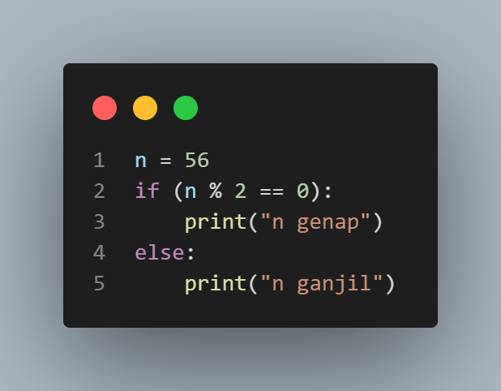
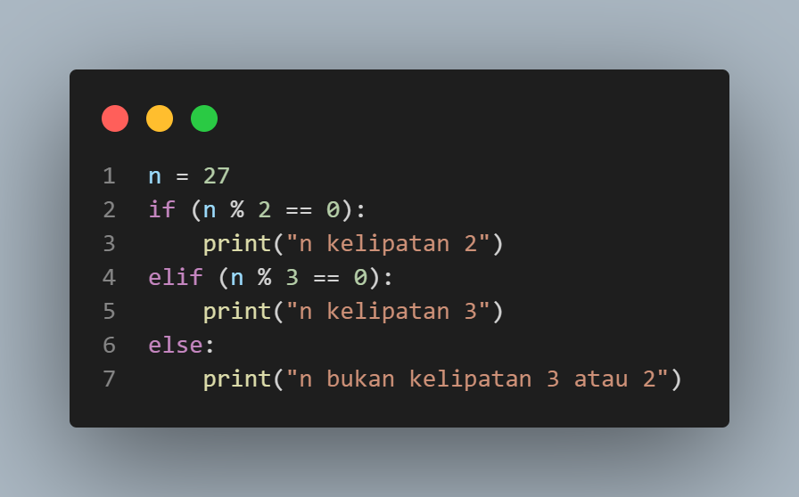

Percabangan
Pada bagian ini akan membahas mengenai penggunaan percabangan untuk memfilter program yang berjalan sesuai dengan kondisi program yang terpenuhi. Penggunaan kondisi tersebut menggunakan perintah if, elif, dan else.
- if (Kondisi pertama yang akan dibaca dalam suatu percabangan)
- elif (Kondisi kedua hingga sebelum perintah else yang akan dibaca dalam suatu percabangan)
- else (Kondisi terakhir yang akan dibaca jika semua kondisi di atasnya tidak terpenuhi dalam suatu percabangan)
Untuk lebih jelasnya, silahkan simak dan cobalah penjelasan di bawah ini.
1. If - Else
Program:
Keluaran:

2. If - Elif - Else
Program:
Keluaran: